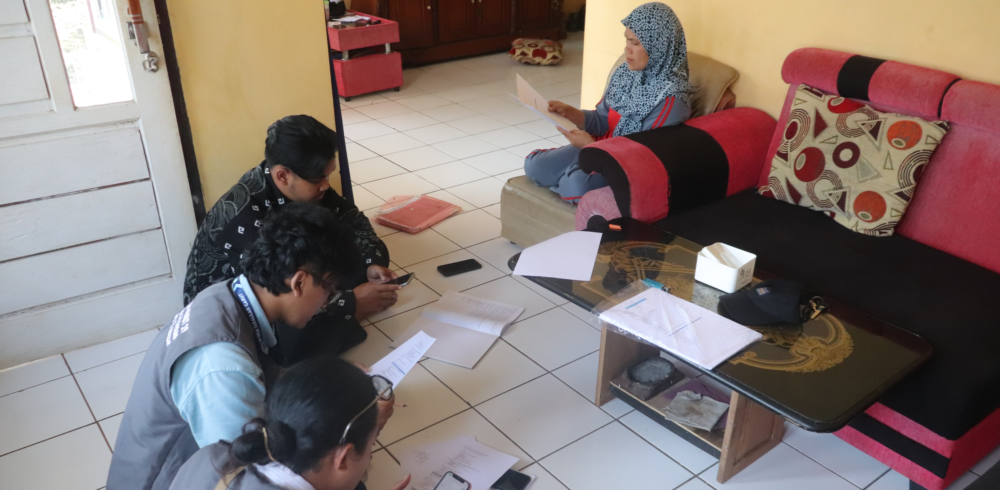
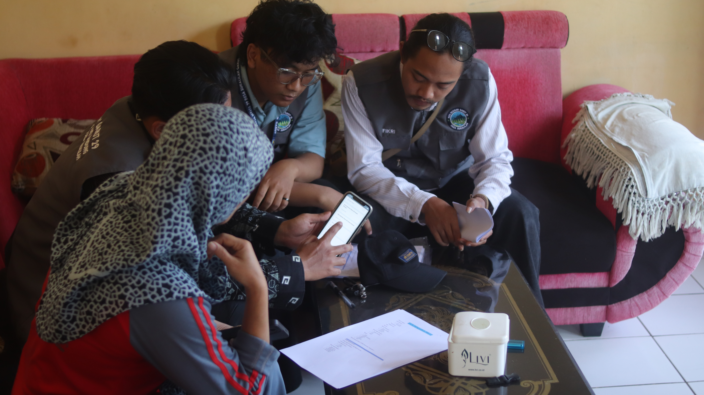

Sukalilah, 1 Agustus 2025 – Pada siklus kedua kegiatan Kuliah Kerja Nyata (KKN) berbasis Sistem Pemberdayaan Masyarakat (Sisdamas) UIN Bandung, kelompok 29 yang ditempatkan di Desa Sukalilah melaksanakan program pemetaan sosial pada minggu kedua, yaitu pada tanggal 31 Juli hingga 4 Agustus 2025. Kegiatan ini diawali dengan diskusi bersama pemerintah desa guna memperoleh gambaran awal mengenai kondisi sosial serta jumlah penduduk di wilayah sasaran.
Tahap selanjutnya dilakukan sensus penduduk di RW 07 Desa Sukalilah yang berada di wilayah Dusun 3. Berdasarkan hasil sensus, jumlah penduduk di RT 1 Kampung Cibihbul tercatat sebanyak 24 jiwa, di RT 2 Rajapolah sebanyak 33 jiwa, serta di RT 3 Babakan sebanyak 22 jiwa. Data yang terkumpul kemudian diolah dan divisualisasikan dalam bentuk peta manual maupun peta digital dengan memanfaatkan aplikasi Google Earth sebagai sarana pendukung. Berdasarkan hasil pemetaan sosial, mayoritas penduduk RW 07 Dusun 3 Desa Sukalilah merupakan warga asli yang berasal dari daerah Garut, meskipun terdapat sebagian kecil yang berasal dari Bogor dan Cianjur. Mata pencaharian utama masyarakat di wilayah ini meliputi petani, pedagang, dan buruh harian. Dari aspek pendidikan, sebagian besar penduduk menamatkan pendidikan terakhir pada jenjang Sekolah Lanjutan Tingkat Atas (SLTA) atau sederajat, sementara hanya satu orang yang tercatat menempuh pendidikan hingga jenjang Strata 1 (S1).

Kegiatan pemetaan sosial ini tidak hanya menghasilkan data kependudukan, melainkan juga menjadi sarana bagi mahasiswa untuk memahami kondisi sosial masyarakat secara langsung. Hasil pemetaan diharapkan dapat memberikan manfaat bagi pemerintah desa dalam perencanaan pembangunan serta menjadi dasar pertimbangan dalam penyusunan kebijakan di masa mendatang.